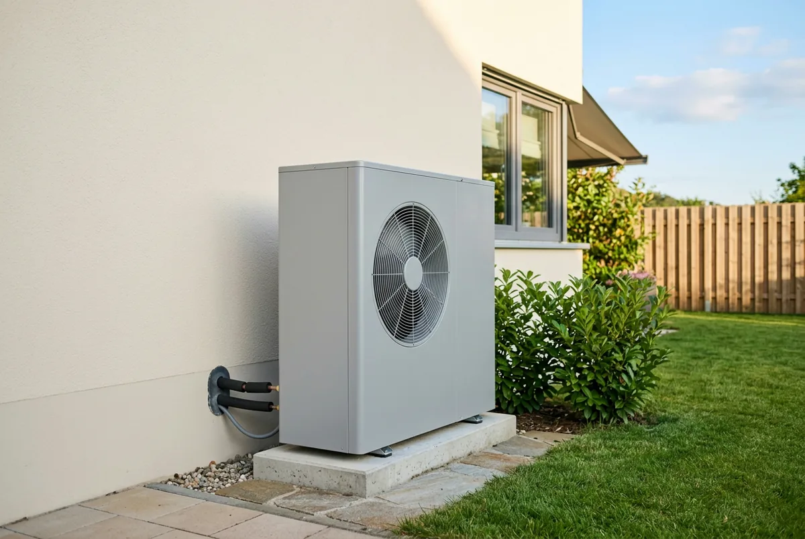

Inhaltsverzeichnis
Das Wichtigste in Kürze
- Heizungstausch: KfW, Programm 458 — 30 Prozent Grundförderung plus Klimageschwindigkeitsbonus (16 Prozentpunkte) und Einkommensbonus (10 bis 40 Prozentpunkte). Nicht das BAFA.
- Hülle und Anlagentechnik: BAFA — 15 Prozent für Dämmung, Fenster, Lüftung und Heizungsoptimierung zur Effizienzverbesserung; 50 Prozent für Fachplanung, Baubegleitung und Optimierung zur Emissionsminderung.
- Getrennte Höchstkosten: 28.000 Euro für die erste Wohneinheit beim Heizungstausch, 30.000 Euro bei Einzelmaßnahmen — mit iSFP-Bonus 60.000 Euro.
- Neu seit dem 21.07.2026: Der Deckel von 70 Prozent — 80 Prozent für selbstnutzende Eigentümerinnen und Eigentümer mit einem zu versteuernden Haushaltsjahreseinkommen bis 30.000 Euro — gilt jetzt auch für Einzelmaßnahmen beim BAFA.
- Kombinierbar: Heizung bei der KfW, Dämmung beim BAFA — im selben Vorhaben, aber in zwei getrennten Anträgen. Nie zweimal für dieselbe Maßnahme.
- Kredite immer KfW: Der Ergänzungskredit 358/359 besteht unverändert fort; er setzt eine zugesagte, noch nicht ausgezahlte Zuschussförderung voraus.
Die Kurzantwort: Wer fördert was?
Für den Heizungstausch ist die KfW zuständig, für Gebäudehülle, Anlagentechnik und Heizungsoptimierung das BAFA — diese Aufgabenteilung gilt seit 2024 unverändert:
- Heizungstausch (Wärmepumpe, Biomasse, Wärmenetzanschluss): KfW, Programm 458.
- Gebäudehülle (Dämmung, Fenster, außenliegender Sonnenschutz): BAFA.
- Anlagentechnik außer Heizung, etwa eine Lüftungsanlage: BAFA.
- Heizungsoptimierung ohne Austausch des Wärmeerzeugers, etwa der hydraulische Abgleich: BAFA.
- Fachplanung und Baubegleitung: BAFA.
- Kredite, unabhängig von der Maßnahme: KfW.
Beide Töpfe gehören zur Bundesförderung für effiziente Gebäude (BEG), werden aber getrennt beantragt.
Genau hier entsteht die häufigste Verwirrung: Auf vielen Ratgeberseiten steht die Heizungsförderung bis heute beim BAFA, und in älteren Beiträgen finden Sie sogar den Klimageschwindigkeitsbonus unter einer Überschrift wie „BAFA-Förderungen". Das ist doppelt falsch. Der Bonus gehört zur KfW-Heizungsförderung, und er liegt seit dem 21. Juli 2026 nicht mehr bei 20, sondern bei 16 Prozentpunkten mit halbjährlicher Absenkung. Bis 2023 lief ein Teil der Heizungsförderung tatsächlich über das BAFA — seit 2024 nicht mehr.
Kurz erklärt: Was die KfW ist und was das BAFA ist
Die beiden Namen stehen nicht für konkurrierende Fördertöpfe, sondern für zwei Stellen, die denselben Topf ausführen. Die KfW ist eine staatliche Förderbank: Sie vergibt Kredite und wickelt daneben Zuschussprogramme ab — die Heizungsförderung läuft dort als Programm 458 und ist ein reiner Zuschuss. Das BAFA ist eine Bundesbehörde und zahlt Zuschüsse für Einzelmaßnahmen aus.
Beide handeln auf derselben Rechtsgrundlage, der Richtlinie BEG Einzelmaßnahmen vom 17. Juli 2026, in Kraft seit dem 21. Juli 2026. Wenn Sie lesen, das BAFA sei „großzügiger", ist das ein Missverständnis: Die Fördersätze stehen für beide im selben Dokument. Unterschiedlich sind nur die Maßnahmen und das Verfahren.

Die maßgebliche Regel: Zuständigkeit nach Maßnahmennummern
In der Richtlinie steht die Aufteilung nicht als „Heizung hier, Dämmung dort", sondern als Aufzählung von Nummern. Sinngemäß: Für die Zuschussförderung der Maßnahmen nach den Nummern 5.1, 5.2, 5.3 Buchstabe g, 5.4 und 5.5 ist das BAFA zuständig, für die Maßnahmen nach Nummer 5.3 Buchstabe a bis f sowie h bis j die KfW. Die Kreditförderung liegt in jedem Fall bei der KfW.
Übersetzt heißen diese Nummern:
- 5.1 — Gebäudehülle: Dämmung von Außenwänden, Dachflächen, Geschossdecken und Bodenflächen; Fenster; außenliegender sommerlicher Wärmeschutz.
- 5.2 — Anlagentechnik außer Heizung, zum Beispiel Lüftungsanlagen.
- 5.3 — Wärmeerzeuger: die Heizungsliste von der Wärmepumpe über Biomasse bis zum Wärmenetzanschluss.
- 5.4 — Heizungsoptimierung ohne Austausch des Wärmeerzeugers.
- 5.5 — Fachplanung und Baubegleitung.
Die Logik ist damit leicht zu merken: Die Nummer der Maßnahme entscheidet, nicht Ihre Vorliebe für eine Stelle. Die Heizungsliste 5.3 liegt fast vollständig bei der KfW — nur der Buchstabe g ist beim BAFA verblieben; welche Anlagenart das ist, klären Sie im Zweifel vor dem Antrag mit Ihrem Energieeffizienz-Experten. Der zweite Teil der Regel wird oft übersehen: Kredite kommen immer von der KfW, auch wenn die geförderte Maßnahme selbst eine BAFA-Maßnahme ist.
Die große Vergleichstabelle: Maßnahme, Stelle, Programm, Fördersatz
Die folgende Tabelle ordnet jeder Maßnahme die zuständige Stelle, das Programm, den Fördersatz und die förderfähigen Höchstkosten zu. Alle Werte gelten für Anträge ab dem 21. Juli 2026. Die Prozentsätze beziehen sich auf die förderfähigen Kosten, die Höchstkosten auf die Wohneinheit (WE) nach der Sanierung.
| Maßnahme | Stelle | Programm | Fördersatz | Förderfähige Höchstkosten |
|---|---|---|---|---|
| Heizungstausch: Wärmepumpe, Biomasse, Wärmenetzanschluss (Nr. 5.3 a–f, h–j) | KfW | 458, Zuschuss | 30 % Grundförderung, dazu Klimageschwindigkeitsbonus 16 Prozentpunkte und Einkommensbonus 10–40 Prozentpunkte (nur Selbstnutzer) | 28.000 € (1. WE), je 15.000 € (2.–6. WE), je 8.000 € (ab 7. WE); für die 1. WE ab 01.02.2027 halbjährlich sinkend |
| Dämmung: Außenwände, Dach, Geschossdecken, Bodenflächen (Nr. 5.1 a) | BAFA | BEG EM, Zuschuss | 15 % (mit iSFP-Bonus 20 % nur oberhalb 30.000 €) | 30.000 € / 15.000 € / 8.000 €; mit iSFP-Bonus 60.000 € / 30.000 € / 15.000 € |
| Fenster (Nr. 5.1 b) | BAFA | BEG EM, Zuschuss | 15 % (mit iSFP-Bonus 20 % nur oberhalb 30.000 €) | wie Dämmung |
| Außenliegender sommerlicher Wärmeschutz (Nr. 5.1 c) | BAFA | BEG EM, Zuschuss | 15 % (mit iSFP-Bonus 20 % nur oberhalb 30.000 €) | wie Dämmung |
| Anlagentechnik außer Heizung, z. B. Lüftung (Nr. 5.2) | BAFA | BEG EM, Zuschuss | 15 % (mit iSFP-Bonus 20 % nur oberhalb 30.000 €) | wie Dämmung |
| Heizungsoptimierung zur Effizienzverbesserung (Nr. 5.4 a) | BAFA | BEG EM, Zuschuss | 15 % (mit iSFP-Bonus 20 % nur oberhalb 30.000 €) | wie Dämmung |
| Heizungsoptimierung zur Emissionsminderung (Nr. 5.4 b) | BAFA | BEG EM, Zuschuss | 50 % | wie Dämmung, jedoch ohne iSFP-Bonus |
| Fachplanung und Baubegleitung (Nr. 5.5) | BAFA | BEG EM, Zuschuss | 50 % | 5.000 € (Ein- und Zweifamilienhaus); ab 3 WE je 2.000 €, max. 20.000 € |
| Sanierung zum Effizienzhaus | KfW | 261, Kredit mit Tilgungszuschuss | EH 40 EE 10 %, EH 55 EE 5 %, Denkmal EE 5 %, EH 70 EE und EH 85 EE 0 %; Fachplanung 50 % | 150.000 € Kredit je WE für die investiven Maßnahmen; für Fachplanung und Baubegleitung 10.000 € je Vorhaben (Ein- und Zweifamilienhaus) beziehungsweise 4.000 € je WE, höchstens 40.000 € |
| Ergänzungskredit zu einer zugesagten Zuschussförderung | KfW | 358/359, Kredit | kein Zuschuss; Produkt 358 zinsverbilligt, bis zu 2,5 Prozentpunkte unter den KfW-Refinanzierungskonditionen | 120.000 € je WE, bis zu 100 % der förderfähigen Kosten |
Zwei Boni auf der BAFA-Seite — mit Fallstricken
Der iSFP-Bonus bringt 5 Prozentpunkte, hat seit der Reform aber zwei Bedingungen: ein förderfähiges Mindestinvestitionsvolumen von 30.000 Euro brutto, und er gilt nur für die Ausgaben oberhalb der Höchstgrenze ohne iSFP. Das amtliche Beispiel: Bei 40.000 Euro Investitionskosten wird der Bonus nur für 10.000 Euro gewährt — über die gesamten Kosten gerechnet sind das effektiv 16,25 statt 20 Prozent. Der Sanierungsfahrplan muss bei Antragstellung vorliegen; ausgenommen sind Wärmeerzeuger, die Optimierung zur Emissionsminderung und die Fachplanung.
Der WPB-Bonus für Gebäude mit besonders schlechter Energiebilanz bringt weitere 5 Prozentpunkte — bei Einzelmaßnahmen aber erst ab dem ersten Quartal 2027 und ausschließlich für Dämmung nach Nummer 5.1 a, nicht für Fenster und nicht für Sonnenschutz. Ein taggenaues Datum nennt die Richtlinie nicht. Mehr dazu im Beitrag zum neuen WPB-Bonus für Dämmung.
Was KfW und BAFA gemeinsam haben
Vier Dinge funktionieren auf beiden Seiten gleich:
- Dieselbe Förderung. Heizungszuschuss und Einzelmaßnahmen-Zuschuss sind zwei Teile derselben Bundesförderung für effiziente Gebäude.
- Beides sind Zuschüsse. Weder bei der KfW 458 noch beim BAFA nehmen Sie einen Kredit auf; ausgezahlt wird nach Abschluss und Nachweisführung.
- Beides folgt einer Boni-Logik. Auf einen Grundfördersatz kommen Zuschläge in Prozentpunkten: bei der Heizung Klimageschwindigkeits- und Einkommensbonus samt Familienzuschlag, bei den Einzelmaßnahmen der iSFP-Bonus und ab 2027 der WPB-Bonus.
- Beides deckelt bei 70 beziehungsweise 80 Prozent. Was rechnerisch zusammenkommt, wird gekappt: grundsätzlich bei 70 Prozent, für selbstnutzende Eigentümerinnen und Eigentümer mit einem zu versteuernden Haushaltsjahreseinkommen bis 30.000 Euro bei 80 Prozent. Lebt mindestens ein minderjähriges, kindergeldberechtigtes Kind im Haushalt, sinkt das anzusetzende Einkommen einmalig um 10.000 Euro — die Grenze verschiebt sich auf 40.000 Euro, unabhängig von der Zahl der Kinder.
Der letzte Punkt ist neu: Bis zur Reform galt der 80-Prozent-Deckel nur in der Heizungsförderung, bei Einzelmaßnahmen waren pauschal 70 Prozent die Grenze. Praktisch greift er dort selten.
Welche Position gehört in welchen Antrag?
Wir ordnen Ihr Vorhaben Maßnahme für Maßnahme der zuständigen Stelle zu und prüfen die Angebote Ihrer Handwerksbetriebe vor der Unterschrift auf Förderfähigkeit.
Kostenlose Erstberatung sichernWo die Verfahren auseinanderlaufen: BzA gegen TPB
Die spürbaren Unterschiede liegen nicht bei den Prozentsätzen, sondern beim Papier davor: Beide Stellen verlangen vor dem Antrag eine fachliche Bestätigung — aber unterschiedliche.
Bei der KfW (458) heißt sie Bestätigung zum Antrag (BzA) und trägt eine 15-stellige Nummer für das Kundenportal „Meine KfW". Ausstellen darf sie bei der Heizungsförderung ein Energieeffizienz-Experte oder der Fachunternehmer selbst — eine Besonderheit dieses Programms. Zur Frist: Die KfW nennt für die Bestätigung zum Antrag in ihren Veröffentlichungen keine ausdrückliche Gültigkeitsdauer. Beim BAFA sind die entsprechenden Bestätigungen auf maximal zwei Monate befristet. Klären Sie die Frist im Einzelfall mit Ihrem Energieeffizienz-Experten.
Beim BAFA heißen die Dokumente TPB und TPN. Sie sind aus datenschutzrechtlichen Gründen maximal zwei Monate gültig — wer zu früh beginnt und dann lange überlegt, braucht neue. Und: Ab dem 21. Juli 2026 müssen neue TPB-IDs generiert werden, um einen Antrag nach den neuen Konditionen stellen zu können. Eine ältere ID trägt Sie nicht in die neue Förderwelt hinüber.
Für beide gilt: erst die Bestätigung, dann der Antrag, dann die Umsetzung. Bei der Heizungsförderung muss vor dem Antrag zusätzlich ein Liefer- oder Leistungsvertrag mit aufschiebender oder auflösender Bedingung geschlossen sein. Ein unbedingter Vertrag oder der Baubeginn vor der Antragstellung gilt als Vorhabenbeginn und schließt die Förderung aus — Schritt für Schritt erklärt das der Beitrag zur Heizungsförderung über die KfW 458.
Kombinieren statt entscheiden: zwei Anträge, ein Vorhaben
Sie können KfW-Zuschuss und BAFA-Zuschuss im selben Vorhaben kombinieren: Wer die Gasheizung gegen eine Wärmepumpe tauscht und im selben Zug die oberste Geschossdecke dämmt, nutzt beides. „KfW oder BAFA" ist deshalb in den meisten Sanierungen die falsche Frage. Wichtig sind drei Punkte:
- Getrennte Anträge. Kein gemeinsames Formular — zwei Anträge bei zwei Stellen, je mit eigener Bestätigung und eigenem Nachweis.
- Getrennte Höchstkosten. Die 28.000 Euro der Heizungsförderung und die 30.000 Euro der Einzelmaßnahmen werden nicht verrechnet.
- Nie dieselbe Maßnahme zweimal. Für jede Maßnahme gibt es genau eine zuständige Stelle.
Ob Dämmung und Wärmepumpe im selben Schritt sinnvoll sind, ist eine bauphysikalische Frage, keine Förderfrage — dazu der Beitrag erst dämmen oder erst die Wärmepumpe?
Der Ergänzungskredit 358/359 als Brücke
Muss der Eigenanteil finanziert werden, gibt es bei der KfW den Ergänzungskredit 358/359. Er setzt eine bereits zugesagte, aber noch nicht ausgezahlte Zuschussförderung voraus, die nicht älter als zwölf Monate ist — ob die Zusage von der KfW oder vom BAFA stammt, spielt keine Rolle. Er steht für alle Einzelmaßnahmen offen, einschließlich der Heizung, und reicht bis zu 120.000 Euro je Wohneinheit und bis zu 100 Prozent der förderfähigen Kosten. Eine Einkommensgrenze gilt nur beim zinsverbilligten Produkt 358: Dort darf das zu versteuernde Haushaltsjahreseinkommen 90.000 Euro nicht überschreiten, berechnet als Durchschnitt aus dem zweiten und dritten Jahr vor der Antragstellung. Die Zinsverbilligung kann laut Richtlinie bis zu 2,5 Prozentpunkte unter den KfW-Refinanzierungskonditionen liegen; konkrete Zinssätze setzt die KfW erst am Tag der Zusage fest. Die Varianten zeigt der Beitrag zu KfW-Kredit, Zuschuss und Ratenzahlung.
Eine Behauptung aus älteren Beiträgen trifft nicht zu: Die Kreditförderung für Einzelmaßnahmen sei eingestellt. Das Merkblatt zu 358/359 gilt ab dem 21. Juli 2026 weiter — Kreditbetrag, Einkommensgrenze und Zwölf-Monats-Frist unverändert.
Wenn das ganze Haus dran ist: KfW 261
Wer sein Haus auf eine Effizienzhaus-Stufe saniert, nutzt das KfW-Programm 261. Das ist kein Zuschuss, sondern ein Kredit mit Tilgungszuschuss — ein Teil der Kreditsumme wird erlassen. Der Kredithöchstbetrag liegt bei 150.000 Euro je Wohneinheit, die Zinsverbilligung kann bis zu 4 Prozentpunkte unter den KfW-Refinanzierungskonditionen liegen, längstens für die ersten zehn Jahre.
Bei den Tilgungszuschüssen führt die verbreitete Kurzfassung in die Irre. Die KfW schreibt, die Tilgungszuschüsse würden „pauschal jeweils um 10 Prozentpunkte reduziert". Das stimmt nur für die Basiswerte. Im typischen Fall — einer Sanierung mit Erneuerbaren-Energien-Klasse — beträgt die tatsächliche Absenkung 15 Prozentpunkte, weil zusätzlich der frühere EE-Bonus von 5 Prozentpunkten entfallen ist: Ein EH 40 EE brachte vorher 25 Prozent, heute 10 Prozent. Für EH 85 EE und EH 70 EE liegt der Tilgungszuschuss jetzt bei 0 Prozent — die Stufen bleiben förderfähig, der Vorteil beschränkt sich dort aber auf den zinsverbilligten Kredit.
Die EE-Klasse ist kein Bonus mehr, sondern Grundvoraussetzung jeder Stufe: mindestens 65 Prozent erneuerbare Energien oder unvermeidbare Abwärme. Die Nachhaltigkeits-Klasse bringt weiterhin 5 Prozentpunkte.
Noch eine Zahl, die häufig als Verbesserung dargestellt wird: der Höchstbetrag von 150.000 Euro je Wohneinheit. Für Vorhaben mit EE- oder Nachhaltigkeits-Klasse galt er bereits vorher; weggefallen ist nur die niedrigere Stufe von 120.000 Euro für Vorhaben ohne diese Klassen. Wer ohnehin EE oder NH erreicht — und das ist jetzt Pflicht —, gewinnt dadurch nichts.
Entscheidungshilfe: wenn — dann
Die Zuordnung folgt immer der Maßnahme, nie der Institution:
- Wenn Sie die Heizung austauschen, dann KfW 458 — egal, was ältere Ratgeberseiten zum BAFA schreiben.
- Wenn Sie dämmen, Fenster tauschen oder außenliegenden Sonnenschutz einbauen, dann BAFA.
- Wenn Sie eine Lüftungsanlage einbauen, dann BAFA.
- Wenn Sie die bestehende Heizung optimieren lassen, dann BAFA — 15 Prozent zur Effizienzverbesserung, 50 Prozent zur Emissionsminderung.
- Wenn Sie Fachplanung und Baubegleitung beauftragen, dann BAFA, 50 Prozent.
- Wenn Sie Heizung und Hülle gleichzeitig angehen, dann beides — in zwei getrennten Anträgen.
- Wenn Sie auf eine Effizienzhaus-Stufe sanieren, dann KfW 261 statt Einzelmaßnahmen — bei EH 85 EE und EH 70 EE bleibt vom Tilgungszuschuss allerdings nichts.
- Wenn Sie den Eigenanteil finanzieren und bereits eine Zusage haben, dann Ergänzungskredit 358/359 — innerhalb von zwölf Monaten und vor der Auszahlung des Zuschusses.
Was wir dabei für Sie übernehmen
Auf der Rechnung eines Heizungsbauers stehen regelmäßig Positionen, die in zwei Anträge gehören — diese Trennung nehmen wir für Sie vor. In einer Tabelle wirkt die Zuordnung einfacher, als sie in einem echten Angebot ist. Ohne saubere Trennung fallen solche Positionen später aus der Förderung.
Wir ordnen Ihr Vorhaben deshalb vorab den richtigen Töpfen zu, Maßnahme für Maßnahme, und prüfen die Angebote Ihrer Handwerksbetriebe vor der Unterschrift auf Förderfähigkeit. Dabei achten wir darauf, dass die Angebote denselben Leistungs- und Lieferumfang abbilden und damit vergleichbar sind. Für Wärmepumpen kommt die raumweise Heizlastberechnung hinzu.
Fazit: Die Maßnahme entscheidet, nicht die Institution
KfW oder BAFA ist keine Wahl, sondern eine Zuordnung: Heizungstausch und Kredite zur KfW, Gebäudehülle, Anlagentechnik, Heizungsoptimierung und Fachplanung zum BAFA. Wer diese Linie kennt, prüft jede Ratgeberseite in Sekunden — steht der Heizungszuschuss dort beim BAFA, ist der Text älter als 2024, und dann stimmen meist auch die Prozentsätze nicht mehr.
Für die Praxis: Listen Sie alle Maßnahmen auf, ordnen Sie jede einzeln zu, und legen Sie erst danach die Reihenfolge fest. Beantragen Sie nie zweimal dasselbe, und unterschreiben Sie keinen unbedingten Vertrag vor dem Antrag. Den Gesamtüberblick gibt unser Beitrag zu allen Änderungen der BEG-Reform ab dem 21.07.2026; wie sich die Zuschüsse konkret auswirken, zeigen die Gesamtkosten eines Heizungstauschs nach Abzug der Förderung.
Stand der Angaben (26. Juli 2026)
Stand: 26. Juli 2026, alle Angaben ohne Gewähr. Maßgeblich sind die Richtlinie BEG EM vom 17. Juli 2026 (in Kraft seit 21. Juli 2026), die Richtlinie BEG Wohngebäude sowie die KfW-Merkblätter zu den Programmen 458, 261 und 358/359 in ihrer jeweils gültigen Fassung. Dieser Beitrag ersetzt keine Prüfung des Einzelfalls und keine Rechtsberatung.
Kurz und direkt beantwortet
Die folgenden Fragen beantworten wir bewusst in wenigen Sätzen — jede Antwort steht für sich und ist ohne den übrigen Text verständlich.
Was ist der Unterschied zwischen einer BzA und einer TPB?
Beides sind fachliche Bestätigungen, die vor dem Förderantrag vorliegen müssen, aber für unterschiedliche Stellen. Die Bestätigung zum Antrag (BzA) gehört zur KfW-Heizungsförderung 458; sie trägt eine 15-stellige Nummer für das Kundenportal Meine KfW und darf laut KfW-Merkblatt 458 von einem Energieeffizienz-Experten oder vom Fachunternehmer selbst ausgestellt werden. Die technische Projektbeschreibung (TPB) gehört zum BAFA-Antrag für Einzelmaßnahmen. Wer Heizung und Dämmung angeht, braucht beide.
Muss ich den Handwerkervertrag vor oder nach dem Förderantrag unterschreiben?
Vorher, aber ausschließlich als bedingter Vertrag. Nach dem KfW-Merkblatt 458 muss vor der Antragstellung ein Liefer- oder Leistungsvertrag mit aufschiebender oder auflösender Bedingung geschlossen sein; er wird beim Antrag hochgeladen und muss ein voraussichtliches Umsetzungsdatum enthalten. Ein unbedingter Vertragsabschluss oder der tatsächliche Baubeginn vor der Antragstellung gilt dagegen als Vorhabenbeginn und schließt die Förderung aus.
Wie viel Zeit habe ich nach der Förderzusage für den Umbau?
Nach dem KfW-Merkblatt 458 haben Sie einen Bewilligungszeitraum von 36 Monaten, um das Vorhaben umzusetzen. Die Nachweise müssen Sie innerhalb von sechs Monaten nach Abschluss des Vorhabens einreichen, maßgeblich ist das Datum der letzten Rechnung, spätestens jedoch sechs Monate nach Ablauf des Bewilligungszeitraums. Erst danach zahlt die KfW den Zuschuss aus. Vor der Zusage darf mit den Arbeiten nicht begonnen werden.
Gibt es den KfW-Ergänzungskredit 358/359 noch?
Ja. Das KfW-Merkblatt zu den Krediten 358 und 359 ist ausdrücklich gültig ab dem 21. Juli 2026 und verweist auf die Richtlinie BEG EM vom 17. Juli 2026; eingestellt wurde diese Kreditförderung nicht. Die Zinsverbilligung des Produkts 358 setzt laut Merkblatt ein zu versteuerndes Haushaltsjahreseinkommen von höchstens 90.000 Euro voraus, berechnet als Durchschnitt aus dem zweiten und dritten Jahr vor Antragstellung. Konkrete Zinssätze legt die KfW erst zur Zusage fest.
Wie hoch sind die Tilgungszuschüsse bei KfW 261 seit der Reform?
Nach dem KfW-Merkblatt 261 in der ab dem 21. Juli 2026 gültigen Fassung gilt für private Antragsteller: Effizienzhaus 40 EE 10 Prozent, Effizienzhaus 55 EE 5 Prozent, Effizienzhaus Denkmal EE 5 Prozent, Effizienzhaus 70 EE und 85 EE jeweils 0 Prozent. Die verbreitete Kurzfassung minus 10 Prozentpunkte greift zu kurz: Beim Effizienzhaus 40 EE sind es gegenüber der Vorfassung 15 Prozentpunkte, weil zusätzlich der Bonus für die EE-Klasse entfallen ist.
Bis wann gilt die neue BEG-Richtlinie?
Die Richtlinie BEG EM vom 17. Juli 2026 ist am 21. Juli 2026 in Kraft getreten und endet nach ihrem eigenen Wortlaut mit Ablauf des 31. Dezember 2030. Sie ist die gemeinsame Rechtsgrundlage für die KfW-Heizungsförderung und für die BAFA-Zuschüsse zu Einzelmaßnahmen; beide Stellen führen dieselbe Förderung aus. Mehrere Fördersätze und Höchstkosten sind darin bereits mit festen Absenkungsterminen hinterlegt, maßgeblich ist jeweils der Zeitpunkt der Antragstellung.
Gilt die 80-Prozent-Obergrenze auch bei den BAFA-Einzelmaßnahmen?
Ja, seit dem 21. Juli 2026. Die Richtlinie BEG EM vom 17. Juli 2026 setzt die Obergrenze des Fördersatzes für Einzelmaßnahmen bei 80 Prozent für selbstnutzende Eigentümer mit einem zu versteuernden Haushaltsjahreseinkommen bis 30.000 Euro und sonst bei 70 Prozent; zuvor galten pauschal 70 Prozent. Praktisch wirkt sich das kaum aus: Mit 15 Prozent Grundförderung und den möglichen Boni bleibt der Fördersatz weit unter dieser Grenze.
Häufige Fragen
Ist KfW und BAFA das Gleiche?
Nein. Die KfW ist eine staatliche Förderbank, das BAFA eine Bundesbehörde. Beide führen aber dieselbe Förderung aus: die Bundesförderung für effiziente Gebäude auf Grundlage der Richtlinie BEG Einzelmaßnahmen vom 17. Juli 2026. Unterschiedlich ist nur, wofür sie zuständig sind. Die KfW wickelt den Heizungstausch als Zuschuss ab (Programm 458) und vergibt sämtliche Kredite. Das BAFA zahlt Zuschüsse für Einzelmaßnahmen an der Gebäudehülle, für Anlagentechnik außer Heizung, für die Heizungsoptimierung sowie für Fachplanung und Baubegleitung.
Wer ist für die Heizungsförderung zuständig — KfW oder BAFA?
Ausschließlich die KfW, über das Programm 458. Bis 2023 lief ein Teil der Heizungsförderung über das BAFA, seit 2024 nicht mehr. An dieser Zuständigkeit hat die BEG-Reform vom 21. Juli 2026 nichts geändert — nur an den Fördersätzen. Wenn Sie den Klimageschwindigkeitsbonus oder den Einkommensbonus unter der Überschrift BAFA finden, ist der Beitrag veraltet. Beide Boni gehören zur KfW-Heizungsförderung; der Klimageschwindigkeitsbonus liegt seit dem 21. Juli 2026 bei 16 Prozentpunkten und sinkt danach halbjährlich.
Kann ich BAFA und KfW gleichzeitig beantragen?
Ja, solange es um unterschiedliche Maßnahmen geht. Wenn Sie im selben Vorhaben die Heizung tauschen und die Gebäudehülle dämmen, stellen Sie zwei Anträge: den Heizungszuschuss bei der KfW, den Zuschuss für die Dämmung beim BAFA. Beide haben eigene förderfähige Höchstkosten, die nicht miteinander verrechnet werden, und jeweils eine eigene fachliche Bestätigung. Was nicht geht: derselbe Kostenblock in zwei Anträgen. Für jede einzelne Maßnahme gibt es genau eine zuständige Stelle.
Was ist besser: ein Kredit von der KfW oder ein Zuschuss vom BAFA?
Kredit und Zuschuss haben unterschiedliche Aufgaben. Für Einzelmaßnahmen ist der Zuschuss der Regelweg; er ist nicht zurückzuzahlen. Der Ergänzungskredit 358/359 kommt erst danach ins Spiel: Er setzt eine bereits zugesagte, aber noch nicht ausgezahlte Zuschussförderung voraus, die nicht älter als zwölf Monate ist, und finanziert den Eigenanteil mit bis zu 120.000 Euro je Wohneinheit. Ein echter Entscheidungsfall ist nur die systemische Sanierung: Dort steht der Kredit mit Tilgungszuschuss aus Programm 261 den Einzelmaßnahmen-Zuschüssen gegenüber.
Wie hoch sind die förderfähigen Höchstkosten bei KfW und BAFA?
Sie werden häufig verwechselt. Beim Heizungstausch über die KfW sind es 28.000 Euro für die erste Wohneinheit, je 15.000 Euro für die zweite bis sechste und je 8.000 Euro ab der siebten; der Betrag für die erste Wohneinheit sinkt ab dem 1. Februar 2027 halbjährlich. Bei den Einzelmaßnahmen über das BAFA sind es 30.000, 15.000 und 8.000 Euro — mit iSFP-Bonus verdoppeln sich diese Beträge auf 60.000, 30.000 und 15.000 Euro. Für Fachplanung und Baubegleitung gilt ein eigener Deckel.